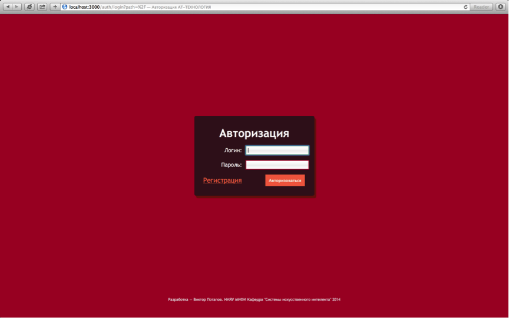
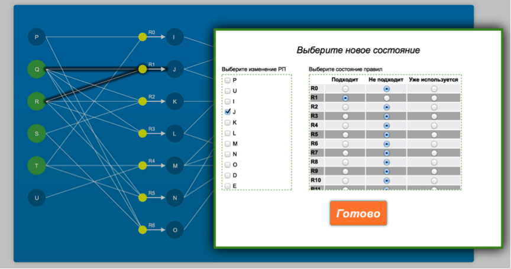

Прямой вывод
Уважаемые студенты!
Здесь собраны методические указания для успешного выполнения лабораторных заданий по теме прямой вывод в Научной лаборатории ИСиТ НИЯУ МИФИ.
Рассмотрим пример «ручного вывода»,для фрагмента БЗ, описывающего ситуацию «Покупка легкового автомобиля» в виде шести нижеприведенных правил, которые на естественном языке выглядят следующим образом:
|
П.1. Если у человека много денег и ему удобно ездить на машине, то нужно ехать в автосалон. |
|
П.2. Если у человека мало денег и ему нужен автомобиль, то нужно ехать на рынок подержанных автомобилей. |
|
П.3. Если есть время и нужно ехать в автосалон, то необходимо определиться с маркой машины. |
|
П.4. Если есть время и нужно ехать на авторынок, то необходимо определиться с пробегом покупаемой машины. |
|
П.5. Если человек приехал в автосалон и определился с маркой, то нужно произвести покупку нового автомобиля. |
|
П.6. Если человек приехал на авторынок и определился с пробегом, то нужно произвести покупку б/у автомобиля. |
Используя упрощенную версию ЯПЗ системы Level5.Object, эти правила представляются в следующем виде.
|
|
|
|
|
|
|
|
|
|
|
|
Пусть от пользователя СОЗ(ЭС) в систему, т.е. в рабочую память, поступили следующие факты:
Начальное состояние РП:
- "Много денег"
- "Удобно ездить на авто"
- "Есть время"
Рассмотрим основные шаги алгоритмов прямого и обратного вывода.
Прямой вывод
В этом случае необходимо просматривать все правила и выбирать те, у которых выполняются условия, тем самым формируя конфликтное множество. Затем, используя махенизм разрешения конфликтов, выбирать подходящее правило, добавлять его заключение в рабочую память и т.д.
За один проход можно добавить в РП только один факт.
F = <N,a1 b1 [P1], a2 b2 [P2], ..., an bn [Pn]>,
где
N— имя фрейма;ai— имя i-слота;bi— значение i-слота;[Pi]— процедура, привязанная к i-слоту (опционально);
Важно, что в качестве значений слотов могут выступать имена других фреймов, что обеспечивает связь между ними.
Обычно выделяют фреймы-прототипы, хранящиеся в БЗ, и фреймы-экземпляры, которые создаются на основе фреймов-прототипов для отображения конкретных ситуаций на основе поступающих данных.
Ниже показан пример фрейма-прототипа для ситуации "сдача экзамена в вузе".
| Сдающий | (студент, аспирант, абитуриент, группа) |
| Принимающие | (лектор, ассистент, комиссия) |
| Предмет/Дисциплина | (название предмета/дисциплины) |
| Результат | (оценка, баллы) |
| Место/Время | (расписание сессии) |
Комментируя этот пример, можно указать на важнейшее свойство фреймов, связанное с тем, что удаление из этого описания любого актанта приводит к потере свойств, определющих суть данного явления — сдача экзамена в вузе.
Другая сильная сторона фреймов заключается в возможности включения в слоты фрейма различных предположений и ожиданий, что позволяет моделировать ситуации, в которых отсутствует упоминание о различных деталях (например, широкое использование по умолчанию некоторых стандартных для ситуации значений и т. п.)
Фреймы легко организуются в однородные и неоднородные сети фреймов, что позволяет многим специалистам в области ИИ считать фреймы частым видом специально организованных семантических сетей.
Источник: Основы построения интеллектуальных систем. Г.В. Рыбина
Введение
В новой версии программы для разрешения конфликтов были применены коэфициенты определенности правой части правила.
Все конфликтные ситуации разрешаются путем выбора правила с наибольшим коэффициентом определенности.
Для прохождения тестирования у вас будет ограниченное время:
- Прямой вывод - 7 минут
- Обратный вывод - 8 минут
В правом верхнем углу всегда отображается справочная информация, которая будет исключать «в корне» неправильные действия.
При прохождении прямого вывода у вас будет возможность редактирования и удаления шагов с трассы вывода, а при прохождении обратного вывода только удаление.
Если у вас возник конфилкт коэффициентов, то нужно выбрать тот, чей номер правила меньший.
Сценарий лабораторной работы
Первое, что вам необходимо сделать – авторизоваться по вашим логинам и паролям, которые вам предоставят инженеры кафедры.

После авторизации, вы получаете доступ к панели управления в режиме RunTime.

Далее, вам надо нажать на ссылку Прямой вывод или Обратный вывод. Вам откроется таблица с вашими результатами.
Далее нажимаете на ссылку Пройти тестирование и проходите тестирование выбранного вами вывода.
Прохождение прямого вывода
При запуске тестирования ваша база сохранится на сервере, и вам откроется окно Выбор начального состояния.
Также предупреждаем, что попытка прохождения тестирования после начала прохождения исчерпается.
В окне вам нужно указать факты, которые должны быть в начальной РП. Указывать их нужно обоснованно. То есть вы должны указывать факты, которые находятся на самом нижнем уровне.
При неправильных действиях, по выбору начальной РП в правом углу будут появлятся уведомления и методы решения проблемы.
При успехе данного этапа у вас появится примерно такая картина (здесь в РП добавили 4 факта Q,R,S,T) (старая версия программы, в новой у вас откроется ваша модель, с указанием коэффициентов определенности ПЧП)
сюда нужны НОВЫЕ скриншоты
Далее вы должны выбирать правила, которые могут сработать. Для данного примера это например правило R1
сюда нужны НОВЫЕ скриншоты с выбранным правилом R1
Для того, чтобы выбрать правило нажмите на желтый круг для данного правила, вам откроется окно изменения состояния. При срабатывании правила вам нужно будет указать изменения в РП, для данного случая(срабатывание правила R1) это будет факт J, поэтому мы его указываем:
сюда нужны НОВЫЕ скриншоты
Также в данном окне вам необходимо выбрать состояние правил. Поскольку это первый проход у нас будет подходить только первое правило, остальные не подходят. Нажимаете на кнопку Готово.
В вашей версии программы с приминением коэффициентов определенности нужно выбирать не любое правило, а то, которое может сработать в данный момент и имеет наибольший коэффициент определенности ПЧП. Учитываются все правила дерева.
сюда нужны НОВЫЕ скриншоты
Ваш шаг отобразится на трассе вывода.
Далее проходите все шаги прямого метода, затем нажимаете оценить. Вам покажется ваша оценка. Затем переходите в панель управления для прохождения обратного вывода.
При шагах > 1 не забывайте, что правила, которые на данный момент были выполненны, должны иметь состояние «уже используется».